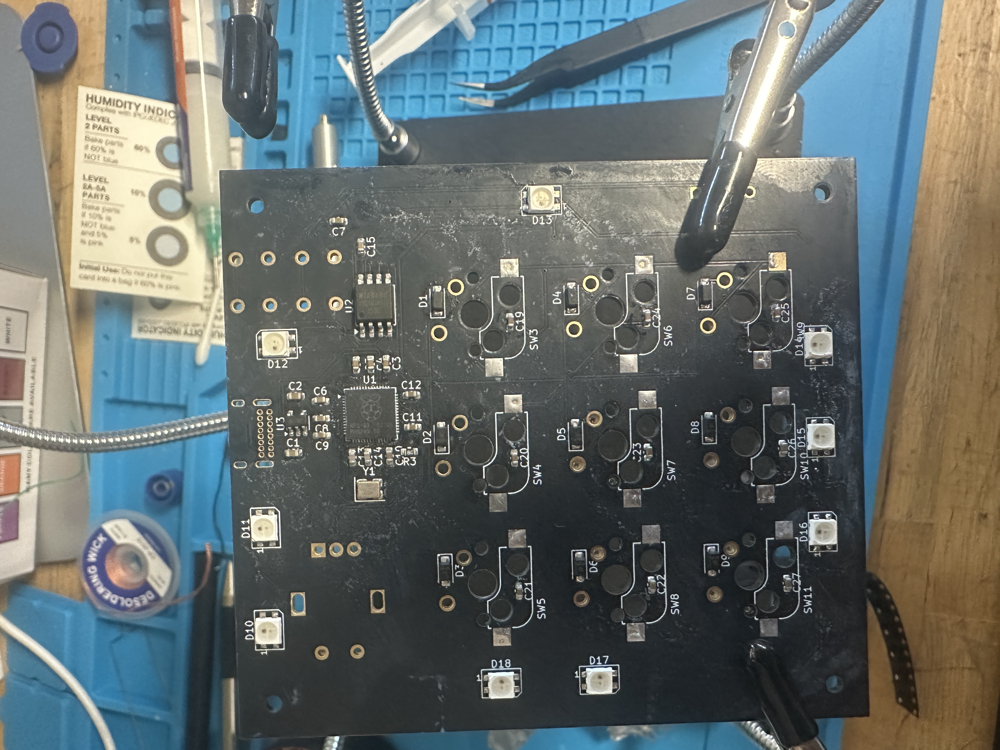
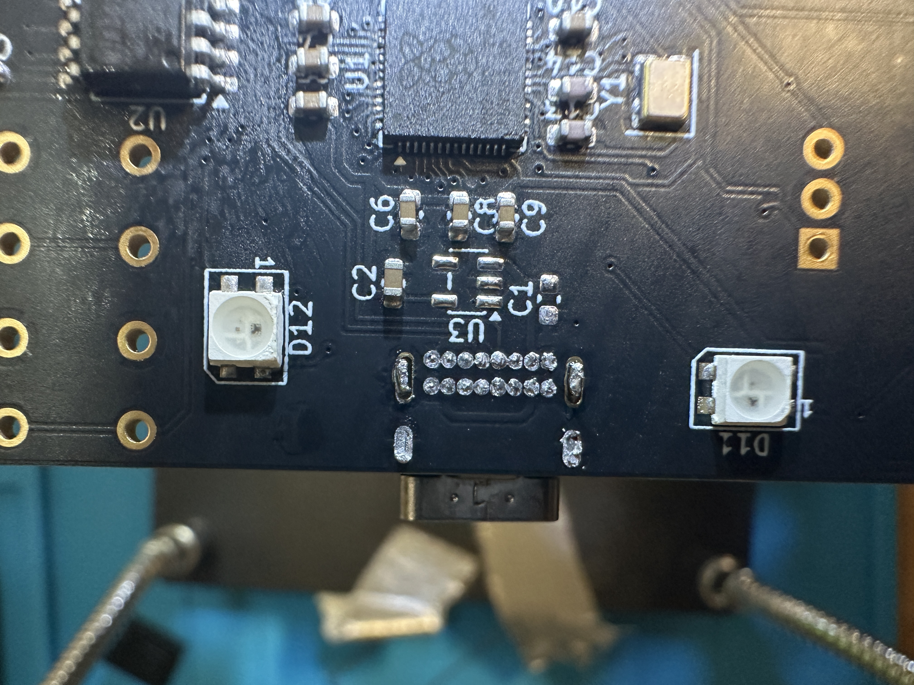
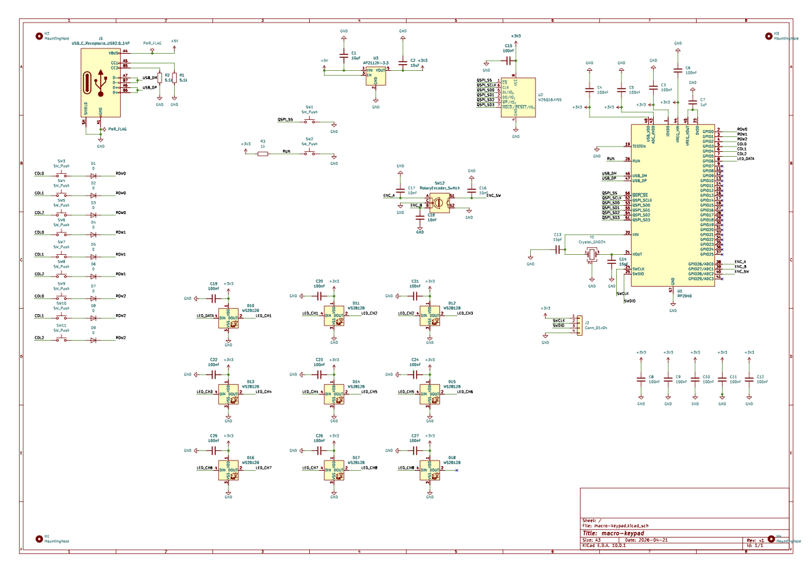
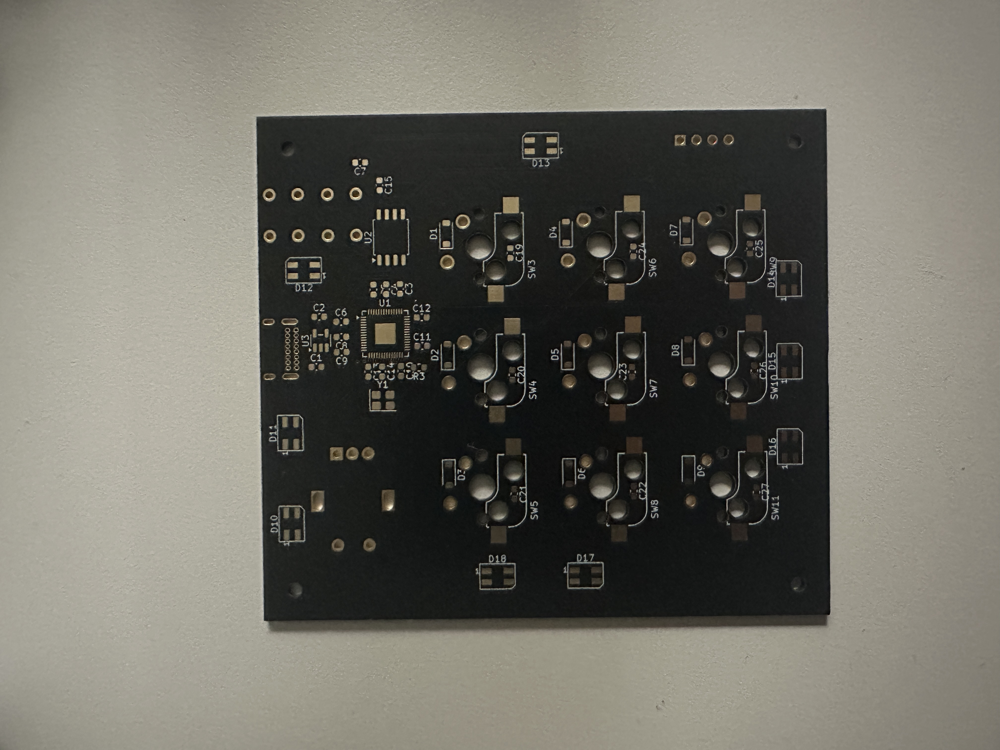
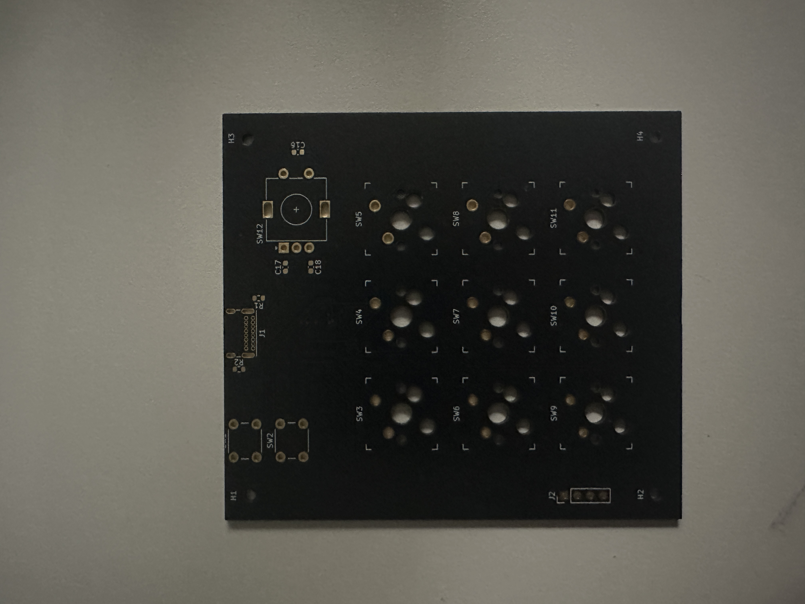

The idea
A 3×3 mechanical macro keypad, designed entirely from scratch — schematic, PCB layout, and fabrication — instead of starting from a reference board. I wanted a real end-to-end PCB design exercise, not just "a keypad that works": component selection, schematic capture, layout, design-rule verification, and getting real boards back from a fab house.
Designing it
The board is built around an RP2040, with a USB-C connector handling both power and data. Nine mechanical key switches sit in a 3×3 matrix, and every switch has its own diode. That matters more than it sounds — without per-key diodes, pressing certain combinations of keys at once creates "ghost" presses the controller can't tell from real ones. The diodes force current to flow one direction only, which is what enables full N-key rollover.
Around the RP2040 itself: a crystal oscillator and decoupling capacitors on every supply pin, placed and chosen by following the microcontroller's own datasheet and reference design, not guessing. Plus USBLC6 ESD protection on the USB data lines to protect against static discharge — easy to skip, and something that only matters the first time it saves the board.
From layout to real boards
After routing a 2-layer PCB layout and defining the board outline, the design went through KiCad's electrical rules check (ERC) and design rules check (DRC), catching and resolving unconnected nets and clearance violations before anything was fabricated. Every component footprint got checked against its actual datasheet land pattern, not just trusted blindly from a library. Gerber and drill files went out to JLCPCB, and real assembled boards came back.
Where it stands
This board is actually my second attempt. The first one had a problem I never fully pinned down — the power rails kept shorting, and even removing components one at a time to isolate it didn't turn up a clear cause. Might've been a solder bridge on the RP2040 itself, or something damaged during assembly. Never got a conclusive answer. Rather than keep chasing it, I started over on a fresh board.
Hardware assembly on this one is done — soldering and bring-up, the harder part, is behind me. What's left is firmware debugging to get it fully working as a real USB HID device.
One tricky spot along the way: clearing solder bridges off the USB-C connector's VBUS and GND pads. They sat close enough together that pulling the excess solder without lifting a pad took several careful passes with solder wick instead of one clean pull.
Gallery

Nearly fully assembled

Clearing VBUS/GND solder bridges
Progress clip

Board render

Assembled — front

Assembled — back